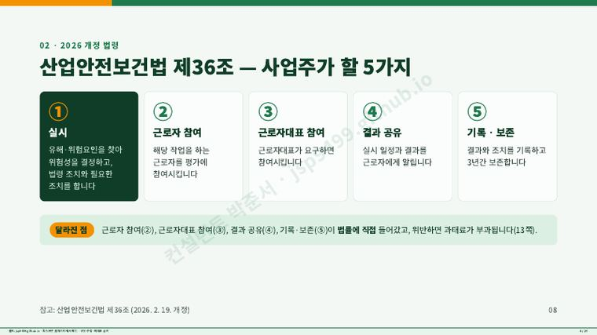
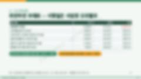
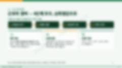
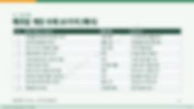

근로자·관리감독자 교육에 바로 쓰는 23장 슬라이드. 2026년 개정 법령(법 제36조, 고시 제2026-73호)을 반영했습니다.
근거: 산업안전보건법 제36조, 같은 법 시행규칙 제37조~제37조의4, 사업장 위험성평가에 관한 지침(고용노동부고시 제2026-73호)
8장 '법 제36조 — 사업주가 할 5가지'를 그대로 보여 드립니다. 전체 23장은 아래에서 무료로 내려받으세요.

8쪽 미리보기 · 눌러서 크게 보기
13쪽
11쪽
22쪽이 자료는 일반적인 안내용 예시입니다. 사업장 업종·규모·작업에 맞게 보완해 사용하고, 법령은 국가법령정보센터(law.go.kr)에서 최신 내용을 확인하세요.